Since GIMP 2.10 layer modes have changed. The old perceptual layer modes are still available for backwards compatibility. They are called “legacy layer modes”. These legacy layer modes will be used when loading images made before the introduction of the new, mostly linear, layer modes.
For more information on layer modes in general, see the default Layer Modes.

If you need to stay compatible with older GIMP versions or you need to
use the legacy layer modes for other reasons, select the
 icon next to the Mode drop-down and change the setting
from Default to
icon next to the Mode drop-down and change the setting
from Default to
 Legacy mode.
The Mode drop-down will now only show legacy layer
modes. All modes will have (legacy) behind their name
(the selected mode will use the short version (l)).
Legacy mode.
The Mode drop-down will now only show legacy layer
modes. All modes will have (legacy) behind their name
(the selected mode will use the short version (l)).
Figure 8.47. Images (masks) used for the layer mode examples
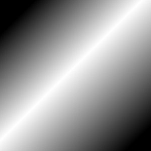
Mask 1

Mask 2 (note: this image is not the actual mask used, but a screenshot of the mask with the checkerboard pattern showing the transparent parts in GIMP)

In the descriptions of the layer modes below, the equations are also shown. This is for those who are curious about the mathematics of the layer modes. You do not need to understand the equations in order to use the layer modes.
The equations are in a shorthand notation. For example, the equation

means, “For each pixel in the upper (Mask) and lower (Image) layer, add each of the corresponding color components together to form the E resulting pixel's color.” Pixel color components must always be between 0 and 255.
![[Note]](images/note.png)
|
Note |
|---|---|
|
Unless the description below says otherwise, a negative color component is set to 0 and a color component larger than 255 is set to 255. |
The examples below show the effects of each of the legacy modes. Note that for simplicity we will omit “(legacy)” when mentioning the layer modes here.
Since the results of each mode vary greatly depending upon the colors on the layers, these images can only give you a general idea of how the modes work. You are encouraged to try them out yourself. You might start with two similar layers, where one is a copy of the other, but slightly modified (by being blurred, moved, rotated, scaled, color-inverted, etc.) and seeing what happens with the layer modes.
Normal Layer Modes
- Normal
-
In this group, only “Normal” is normal.
Figure 8.49. Example for layer mode “Normal”
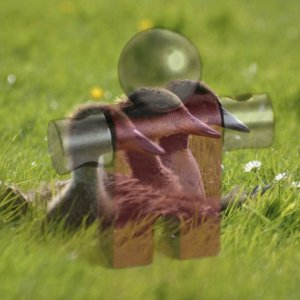
Both images are blended into each other with the same intensity.
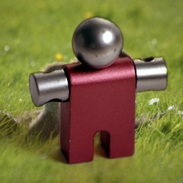
With 100% opacity only the upper layer is shown when blending with “Normal”.
Normal mode is the default layer mode. The layer on top covers the layers below it. If you want to see anything below the top layer when you use this mode, the layer must have some transparent areas.
The equation is:
- Dissolve
-
Figure 8.50. Example for layer mode “Dissolve”
Both images are blended into each other with the same intensity.

With 100% opacity only the upper layer is shown when blending with “dissolve”.
Dissolve mode dissolves the upper layer into the layer beneath it by drawing a random pattern of pixels in areas of partial transparency. It is useful as a layer mode, but it is also often useful as a painting mode.
This is especially visible along the edges within an image. It is easiest to see in an enlarged screenshot. The image on the left illustrates “Normal” layer mode (enlarged) and the image on the right shows the same two layers in “Dissolve” mode, where it can be clearly seen how the pixels are dispersed.

Lighten Layer Modes
- Lighten only
-
Figure 8.52. Example for layer mode “Lighten only”

Mask 1 is used as upper layer with 100% opacity.
Mask 2 is used as upper layer with 100% opacity.
mode compares each component of each pixel in the upper layer with the corresponding one in the lower layer and uses the larger value in the resulting image. Completely black layers have no effect on the final image and completely white layers result in a white image.
The equation is:
The mode is commutative; the order of the two layers doesn't matter.
- Screen
-
Figure 8.53. Example for layer mode “Screen”

Mask 1 is used as upper layer with 100% opacity.

Mask 2 is used as upper layer with 100% opacity.
Screen mode inverts the values of each of the visible pixels in the two layers of the image. (That is, it subtracts each of them from 255.) Then it multiplies them together, divides by 255 and inverts this value again. The resulting image is usually brighter, and sometimes “washed out” in appearance. The exceptions to this are a black layer, which does not change the other layer, and a white layer, which results in a white image. Darker colors in the image appear to be more transparent.
The equation is:
The mode is commutative; the order of the two layers doesn't matter.
- Dodge
-
Figure 8.54. Example for layer mode “Dodge”

Mask 1 is used as upper layer with 100% opacity.
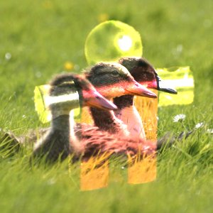
Mask 2 is used as upper layer with 100% opacity.
Dodge mode multiplies the pixel value of the lower layer by 256, then divides that by the inverse of the pixel value of the top layer. The resulting image is usually lighter, but some colors may be inverted.
In photography, dodging is a technique used in a darkroom to decrease the exposure in particular areas of the image. This brings out details in the shadows. When used for this purpose, dodge may work best on Grayscale images and with a painting tool, rather than as a layer mode.
The equation is:
- Addition
-
Figure 8.55. Example for layer mode “Addition”
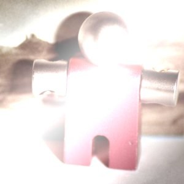
Mask 1 is used as upper layer with 100% opacity.

Mask 2 is used as upper layer with 100% opacity.
Addition mode is very simple. The pixel values of the upper and lower layers are added to each other. The resulting image is usually lighter. The equation can result in color values greater than 255, so some of the light colors may be set to the maximum value of 255.
The equation is:
The mode is commutative; the order of the two layers doesn't matter.


Darken Layer Modes
- Darken only
-
Figure 8.56. Example for layer mode “Darken only”

Mask 1 is used as upper layer with 100% opacity.

Mask 2 is used as upper layer with 100% opacity.
mode compares each component of each pixel in the upper layer with the corresponding one in the lower layer and uses the smaller value in the resulting image. Completely white layers have no effect on the final image and completely black layers result in a black image.
The equation is:
The mode is commutative; the order of the two layers doesn't matter.
- Multiply
-
Figure 8.57. Example for layer mode “Multiply”

Mask 1 is used as upper layer with 100% opacity.
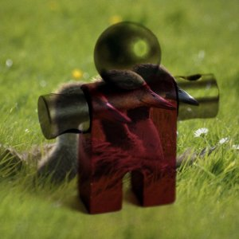
Mask 2 is used as upper layer with 100% opacity.
Multiply mode multiplies the pixel values of the upper layer with those of the layer below it and then divides the result by 255. The result is usually a darker image. If either layer is white, the resulting image is the same as the other layer (1 * I = I). If either layer is black, the resulting image is completely black (0 * I = 0).
The equation is:
The mode is commutative; the order of the two layers doesn't matter.
- Burn
-
Figure 8.58. Example for layer mode “Burn”
Mask 1 is used as upper layer with 100% opacity.

Mask 2 is used as upper layer with 100% opacity.
Burn mode inverts the pixel value of the lower layer, multiplies it by 256, divides that by one plus the pixel value of the upper layer, then inverts the result. It tends to make the image darker, somewhat similar to “Multiply” mode.
In photography, burning is a technique used in a darkroom to increase the exposure in particular areas of the image. This brings out details in the highlights. When used for this purpose, burn may work best on Grayscale images and with a painting tool, rather than as a layer mode.
The equation is:


Contrast Layer Modes
- Overlay
-
Figure 8.59. Example for layer mode “Overlay”

Mask 1 is used as upper layer with 100% opacity.
Mask 2 is used as upper layer with 100% opacity.
Overlay mode in theory inverts the pixel value of the lower layer, multiplies it by two times the pixel value of the upper layer, adds that to the original pixel value of the lower layer, divides by 255, and then multiplies by the pixel value of the original lower layer and divides by 255 again.
Due to a bug [4] the actual equation is equivalent to Soft light. This will not be fixed for the legacy layer mode. However, even if you explicitly use legacy layer mode, GIMP will still set the default Overlay layer mode. Images that have the legacy Overlay mode set for a layer, will have that changed to legacy Soft light, since that's what it effectively is.
- Soft light
-
Figure 8.60. Example for layer mode “Soft light”
Mask 1 is used as upper layer with 100% opacity.
Mask 2 is used as upper layer with 100% opacity.
Soft light is not related to “Hard light” in anything but the name, but it does tend to make the edges softer and the colors not so bright. It is similar to “Overlay” mode. In some versions of GIMP, “Overlay” mode and “Soft light” mode are identical.
The equation is complicated. It needs Rs, the result of Screen mode:
- Hard light
-
Figure 8.61. Example for layer mode “Hard light”

Mask 1 is used as upper layer with 100% opacity.
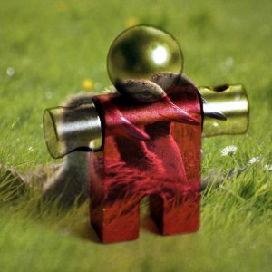
Mask 2 is used as upper layer with 100% opacity.
Hard light mode is rather complicated because the equation consists of two parts, one for darker colors and one for brighter colors. If the pixel color of the upper layer is greater than 128, the layers are combined according to the first formula shown below. Otherwise, the pixel values of the upper and lower layers are multiplied together and multiplied by two, then divided by 256. You might use this mode to combine two photographs and obtain bright colors and sharp edges.
The equation is complex and different according to the value >128 or < 128:


Inversion Layer Modes
- Difference
-
Figure 8.62. Example for layer mode “Difference”
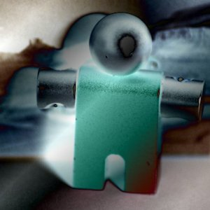
Mask 1 is used as upper layer with 100% opacity.
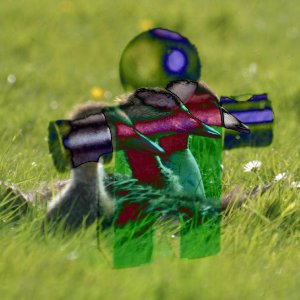
Mask 2 is used as upper layer with 100% opacity.
Difference mode subtracts the pixel value of the upper layer from that of the lower layer and then takes the absolute value of the result. No matter what the original two layers look like, the result looks rather odd. You can use it to invert elements of an image.
The equation is:
The mode is commutative; the order of the two layers doesn't matter.
- Subtract
-
Figure 8.63. Example for layer mode “Subtract”

Mask 1 is used as upper layer with 100% opacity.
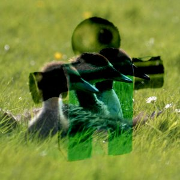
Mask 2 is used as upper layer with 100% opacity.
Subtract mode subtracts the pixel values of the upper layer from the pixel values of the lower layer. The resulting image is normally darker. You might get a lot of black or near-black in the resulting image. The equation can result in negative color values, so some of the dark colors may be set to the minimum value of 0.
The equation is:
- Grain extract
-
Figure 8.64. Example for layer mode “Grain extract”

Mask 1 is used as upper layer with 100% opacity.

Mask 2 is used as upper layer with 100% opacity.
Grain extract mode is supposed to extract the “film grain” from a layer to produce a new layer that is pure grain, but it can also be useful for giving images an embossed appearance. It subtracts the pixel value of the upper layer from that of the lower layer and adds 128.
The equation is:
- Grain merge
-
Figure 8.65. Example for layer mode “Grain merge”
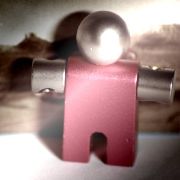
Mask 1 is used as upper layer with 100% opacity.
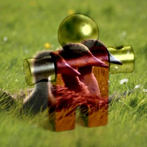
Mask 2 is used as upper layer with 100% opacity.
Grain merge mode merges a grain layer (possibly one created from the “Grain extract” mode) into the current layer, leaving a grainy version of the original layer. It does just the opposite of “Grain extract”. It adds the pixel values of the upper and lower layers together and subtracts 128.
The equation is:
- Divide
-
Figure 8.66. Example for layer mode “Divide”
Mask 1 is used as upper layer with 100% opacity.
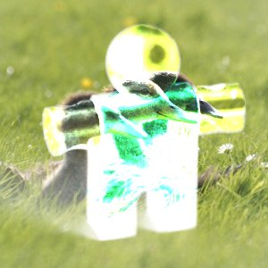
Mask 2 is used as upper layer with 100% opacity.
Divide mode multiplies each pixel value in the lower layer by 256 and then divides that by the corresponding pixel value of the upper layer plus one. (Adding one to the denominator avoids dividing by zero.) The resulting image is often lighter, and sometimes looks “burned out”.
The equation is:


HSV Components Layer Modes
- HSV Hue
-
Figure 8.67. Example for layer mode “HSV Hue”
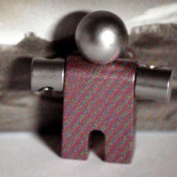
Mask 1 is used as upper layer with 100% opacity.

Mask 2 is used as upper layer with 100% opacity.
HSV Hue mode uses the Hue of the upper layer and the Saturation and Value of the lower layer to form the resulting image. However, if the Saturation of the upper layer is zero, the Hue is taken from the lower layer, too.
- HSV Saturation
-
Figure 8.68. Example for layer mode “HSV Saturation”
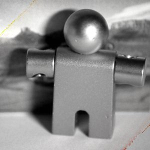
Mask 1 is used as upper layer with 100% opacity.
Mask 2 is used as upper layer with 100% opacity.
HSV Saturation mode uses the Saturation of the upper layer and the Hue and Value of the lower layer to form the resulting image.
- HSL Color
-
Figure 8.69. Example for layer mode “HSL Color”

Mask 1 is used as upper layer with 100% opacity.

Mask 2 is used as upper layer with 100% opacity.
HSL Color mode uses the Hue and Saturation of the upper layer and the Lightness of the lower layer to form the resulting image.
- HSV Value
-
Figure 8.70. Example for layer mode “HSV Value”
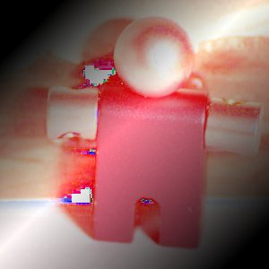
Mask 1 is used as upper layer with 100% opacity.
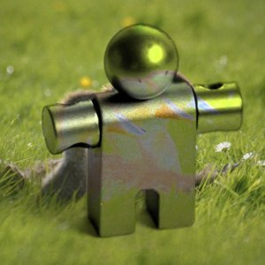
Mask 2 is used as upper layer with 100% opacity.
HSV Value mode uses the Value of the upper layer and the Saturation and Hue of the lower layer to form the resulting image. You can use this mode to reveal details in dark and light areas of an image without changing the Saturation.